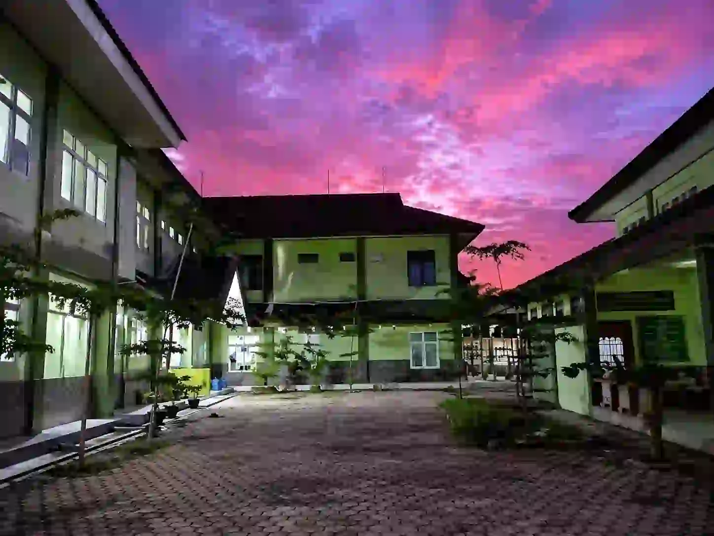

Jember memiliki puluhan SMA negeri dan swasta yang tersebar di berbagai kecamatan, mulai dari pusat kota hingga wilayah pinggiran kabupaten.

Gedung SMAN 1 Jember, salah satu sekolah paling legendaris di kabupaten ini.
Sumber: ---Setiap tahun, momen penerimaan siswa baru selalu bikin orang tua deg-degan. Jember, sebagai kota pendidikan terbesar ketiga di Jawa Timur, punya pilihan SMA yang sangat lengkap. Bukan cuma SMAN 1, 2, dan 3 yang biasa jadi rebutan, tapi ada banyak pilihan berkualitas lainnya.
SMA Negeri di Jember Berdasarkan Rayon
Berdasarkan sistem penerimaan murid baru (SPMB) Jawa Timur, SMA negeri di Jember dibagi ke dalam empat rayon wilayah:
Rayon 1: Pusat Kota dan Timur
- SMAN 1 Jember (Smansa): Paling bergengsi dengan budaya akademik kuat.
- SMAN 2 Jember: Unggul di bidang sains, seni, dan fasilitas modern.
- SMAN Pakusari & SMAN Kalisat: Pilihan solid untuk wilayah timur.
- SMAN Plus Sukowono: Melayani siswa di kawasan Sukowono dan sekitarnya.
Rayon 2: Barat dan Utara Kota
- SMAN 3 Jember: Dikenal dengan visi unggul berbudaya dan berkarakter.
- SMAN 4 Jember: Fokus pada kreativitas dan prestasi olahraga.
- SMAN 5 Jember & SMAN Plus Arjasa: Melayani kawasan Patrang hingga Jelbuk.
Rayon 3 & 4: Wilayah Selatan dan Barat
Sekolah di kecamatan seperti SMAN Ambulu, SMAN Balung, dan SMAN 1 Tanggul memiliki rekam jejak alumni yang sukses menembus PTN bergengsi seperti UGM, Unair, dan UB.
Pilihan SMA Swasta Berkualitas
Jika tidak lolos negeri, Jember memiliki lembaga swasta yang sangat kompetitif:
- SMA Muhammadiyah 3 Jember: Perpaduan kurikulum nasional dan karakter Islami.
- SMA Katolik Santo Paulus Jember: Dikenal dengan kedisiplinan tinggi dan prestasi konsisten.
Memahami Jalur Masuk (SPMB)
Pendaftaran SMA Negeri di Jember menggunakan beberapa jalur utama:
- Jalur Afirmasi (30%): Untuk keluarga kurang mampu dan disabilitas.
- Jalur Prestasi: Berdasarkan nilai akademik atau lomba non-akademik.
- Jalur Domisili (Zonasi): Berdasarkan jarak rumah ke sekolah dalam satu rayon.
"Pilih sekolah yang tepat sesuai minat anak, karena tiga tahun di SMA akan menjadi fondasi penting untuk masa depan mereka."
FAQ SMA Jember
1. Berapa total SMA Negeri di Jember?
Terdapat sekitar 18 SMA Negeri yang tersebar dari pusat kota hingga kecamatan-kecamatan.
2. Apakah bisa mendaftar di luar rayon?
Sistem rayon bersifat mengikat untuk jalur zonasi, namun jalur prestasi seringkali memberikan fleksibilitas lebih luas.
3. Apa sekolah swasta terbaik di Jember?
SMA Muhammadiyah 3 dan SMA Katolik Santo Paulus sering menjadi rujukan utama karena kualitas akademiknya.
Sumber: Medan Aktual, Annibuku, Teknokrat, Beritajatim, Sinar.co.id.